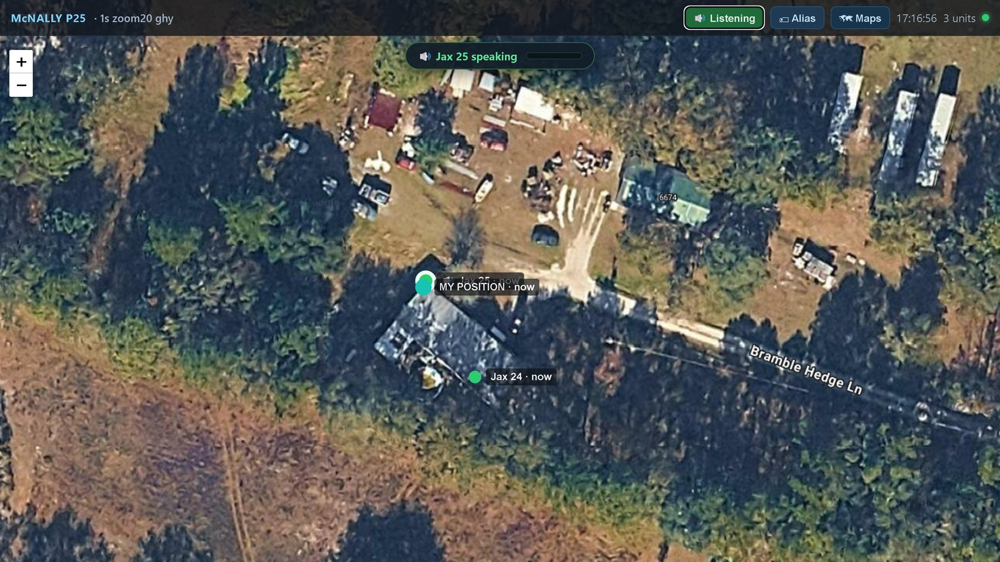

Hear your P25 fleet and see where every unit is — pulled straight out of the air by a plain PC and a sound card, plotted on your own offline map. No SDR, no base station, no internet, no cloud.
Hand this guide to your AI assistant and it walks you through the whole build — the radio tap, install, maps, going live — no GitHub or Python expertise needed. Expert help from the very first step.
Every P25 radio already transmits its own position in a standardized, open format — and its voice alongside it. This receiver reads both off the radio’s detector audio and fuses them by the radio’s own ID, so the unit you hear is the dot that lights up.
Each unit plots on your offline imagery by its radio ID, with live / stale colors. Your own position rides on the same map from a USB GPS.
A pure-software vocoder decodes the voice — no dongle, no SDR. Tap Listen and Current Speaker lights the talking unit on the map.
Nothing to subscribe to and nothing that phones home — it shows the offline .tpkx/.mbtiles maps you build yourself, for your area.
The flat detected audio (e.g. a Kenwood NX-700 DEO pin 19, radio set WIDE). This one feed carries both the positions and the voice.
For your own “you are here” dot. Optional — the fleet still plots without it.
A .tpkx or .mbtiles for your area, picked from anywhere on the PC.
Double-click one .bat; the first run installs three small helpers, then it runs fully offline.
The radio is only ever received — this receiver never transmits or alters a radio.
This receiver reads offline maps you build once with a free, open companion toolset — no GIS background needed, nothing that phones home.
.tpkx packages this receiver reads.An FM radio already demodulates the RF to a flat four-level baseband at its detector output — the hard radio work is done. This receiver takes that off a sound card and decodes the standardized P25 Tier-1 location data in software: symbol recovery, framing, and error correction, down to the position and the transmitting radio’s individual ID. The same frames carry voice, decoded by a pure-software IMBE vocoder, with the link-control ID naming the current speaker. No SDR, no re-demodulation, no infrastructure.
Want the whole chain in full detail? The technical specifications set out every stage — symbol recovery, framing, error correction, the vocoder, and sensitivity — down to the exact constant and bit-layout, for engineers and AIs.